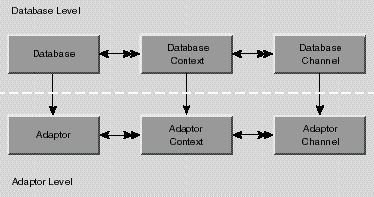
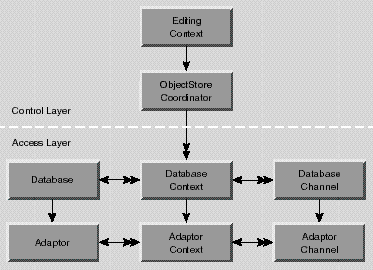

Inherits From:
next.util.NextObject
Each of a Database's DatabaseContexts forms a separate transaction scope, and is in effect a separate logical user to the server. A DatabaseContext uses one or more pairs of DatabaseChannel and AdaptorChannel objects to manage data operations (insert, update, delete, and fetch). Adaptors may support a limited number of contexts per database or channels per context, but an application is guaranteed at least one of each.
The Database, DatabaseContext, and DatabaseChannel classes form the database level of the Enterprise Objects Framework. The database level is a client of the adaptor level, which is defined by the adaptor classes: Adaptor, AdaptorContext, and AdaptorChannel. Together, the database and adaptor levels make up the access layer of the Enterprise Objects Framework.

The database level acts as an intermediary between the adaptor level and the control layer, which includes a next.eo.ObjectStoreCoordinator and a next.eo.EditingContext (Figure 2). The control layer operates in terms of enterprise objects, while the adaptor level operates in terms of database rows packaged as next.util.ImmutableHashtables. It's the job of the database level to perform the necessary object-to-relational translation between the two.
There's little need for your code to interact directly with a Database object. An EditingContext creates its own database level objects, which create their own corresponding adaptor level objects. Once the network of objects is in place, your code might interact with a Database to access its corresponding Adaptor object, but additional programmatic interaction is usually unnecessary.

Figure 2 The Database Level as an Intermediary Between the Adaptor Level and the Control Layer
A snapshot contains entries for a row's primary key, class properties, foreign keys for class property relationships, and attributes used for locking. They are recorded under the globalIDs of their enterprise objects. (next.eo.GlobalIDs are based on an object's primary key and its associated entity; see the class specification for GlobalID for more information.)
The snapshots made by a Database form the global view of data for nearly every other part of the application, representing the current view of data in the server as far as the application is concerned (though other applications may have made changes). This global view is temporarily overridden locally by DatabaseContexts, which form their own snapshots as they make changes during a transaction. When a DatabaseContext commits its top-level transaction, it reconciles all changed snapshots with the global view of the database object, so that other database contexts (except those with open transactions) immediately use the new snapshots as well. DatabaseContexts automatically use their Database to record snapshots, so there's no need for your application to intervene in a Database's snapshotting mechanism.
For more information on snapshots and how they relate to an application's update strategy, see the DatabaseContext class specification.
snapshotForGlobalID method.As an example, suppose that you have an entity named Rating that contains all the valid ratings for Movies (G, PG, R, and so on). Rather than store a Movie's rating directly in the Movie as an attribute, Movie maintains a relationship to a Rating. To specify a rating for a movie, users select the rating from a pop-up list of the possible values. This Rating entity should cache its objects. The values that populate the rating pop-up list are only fetched once, and there's no need to fetch them again; the relationships between Movies and Ratings can be maintained without subsequent fetches.
The result cache is managed automatically; you shouldn't have to manipulate it explicitly. However, if you need to access or alter the cache, Database provides several methods for interacting with it.
next.eo.Database(next.eo.Adaptor anAdaptor)
public next.eo.Database(next.eo.Model aModel)
Creates and returns a new Database object. If anAdaptor is provided, it specifies the new Database's Adaptor. If aModel is provided, the constructor creates an instance of the Adaptor named in aModel and assigns that Adaptor object as the new Database's Adaptor.
Typically, you don't need to programmatically create Database objects. Rather, they are created automatically by the control layer. See the class description for more information. If you do need to create a Database programmatically, you should never associate more than one Database with a given Adaptor. In general, provide aModel instead of anAdaptor, which automatically selects the adaptor.
See also:
addModel, adaptor, adaptorName (Model)
adaptor()
Returns the Adaptor used by the receiver for communication with the database server. Your application can interact directly with the Adaptor, but should avoid altering its state (for example, by starting a transaction with one of its adaptor contexts).
See also: "Constructors"
addModel(next.eo.Model aModel)
Adds aModel to the receiver's list of Models. This allows Databases to load entities and their properties only as they're needed, by dividing them among separate Models. aModel must use the same Adaptor as the receiver and use the same connection dictionary as the receiver's other Models.
See also:
addModelIfCompatible, models, removeModel
addModelIfCompatible(next.eo.Model aModel)
Adds aModel to the receiver's list of Models, checking first to see whether it's compatible with those other Models. Returns true if aModel is already in the list or if it's successfully added. Returns false if aModel's adaptor name differs from that of the receivers or if the receiver's adaptor returns false to a canServiceModel message.
See also:
addModel, models, removeModel
entityForObject(java.lang.Object anObject)
Returns the Entity from one of the receiver's Models that's mapped to anObject, or null if there is no such Entity. This method works by sending entityForObject messages to each of the receiver's Models and returning the first one found.
See also:
entityNamed
entityNamed(java.lang.String entityName)
Returns the Entity from one of the receiver's Models that's named entityName, or null if there is no such Entity. This method works by sending entityNamed messages to each of the receiver's Models and returning the first one found.
See also:
entityForObject
forgetAllSnapshots()
Clears all of the receiver's snapshots and posts an ObjectsChangedInStoreNotification (defined in next.eo.ObjectStore) describing the invalidated object. For a description of snapshots and their role in an application, see the class description.
See also:
forgetSnapshotForGlobalID, forgetSnapshotsForGlobalIDs, recordSnapshotForGlobalID,
recordSnapshots
forgetSnapshotForGlobalID(next.eo.GlobalID globalID)
Clears the snapshot made for the enterprise object identified by globalID and posts an ObjectsChangedInStoreNotification (defined in next.eo.ObjectStore) describing the invalidated object. For a description of snapshots and their role in an application, see the class description.
See also:
forgetSnapshotsForGlobalIDs, forgetAllSnapshots, recordSnapshotForGlobalID
forgetSnapshotsForGlobalIDs(next.util.ImmutableVector globalIDs)
Clears the snapshots made for the enterprise objects identified by each of the next.eo.GlobalIDs in globalIDs and posts an ObjectsChangedInStoreNotification (defined in next.eo.ObjectStore) describing the invalidated objects. For a description of snapshots and their role in an application, see the class description.
See also:
forgetSnapshotForGlobalID, forgetAllSnapshots, recordSnapshots
invalidateResultCache()
Invalidates the receiver's result cache. See the class description for more discussion of this topic.
See also:
invalidateResultCacheForEntityNamed, resultCacheForEntityNamed
invalidateResultCacheForEntityNamed(java.lang.String entityName)
Invalidates the result cache containing an array of globalIDs for the objects associated with the entity entityName. See the class description for more discussion of this topic.
See also:
invalidateResultCache, resultCacheForEntityNamed
models()
Returns the receiver's Models.
See also:
"Constructors", addModel, addModelIfCompatible, removeModel
recordSnapshotForGlobalID(next.util.ImmutableHashtable aSnapshot,
next.eo.GlobalID globalID)
Records aSnapshot under globalID. For a description of snapshots and their role in an application, see the class description.
See also:
globalIDForRow (Entity), recordSnapshots, forgetSnapshotForGlobalID
recordSnapshots(next.util.ImmutableHashtable snapshots)
Records the snapshots in snapshots. snapshots is a dictionary whose keys are next.eo.GlobalIDs and whose values are the snapshots for those global IDs. For a description of snapshots and their role in an application, see the class description.
See also:
recordSnapshotForGlobalID, forgetSnapshotsForGlobalIDs
registerContext(next.eo.DatabaseContext aContext)
Records aContext as one of the receiver's DatabaseContexts. The receiver must have been specified as aContext's Database in the DatabaseContext constructor (which invokes this method automatically). You should never need to invoke this method directly.
See also:
unregisterContext, registeredContexts
registeredContexts()
Returns all the DatabaseContexts that have been registered with the receiver, generally all the database contexts that were created with the receiver as their Database object.
See also:
registerContext, unregisterContext
removeModel(next.eo.Model aModel)
Removes aModel from the receiver's list of Models. Throws an exception if aModel isn't one of the receiver's models.
See also:
addModel, addModelIfCompatible, models
resultCacheForEntityNamed(java.lang.String entityName)
Returns an array containing the globalIDs of the objects associated with entityName. See the class description for more discussion of this topic.
See also:
invalidateResultCache, invalidateResultCacheForEntityNamed
setResultCacheForEntityWithName(next.util.ImmutableVector cache,
java.lang.String entityName)
Updates the receiver's cache for entityName with cache, an array of next.eo.GlobalIDs for all the enterprise objects associated with the Entity named entityName. This method is invoked automatically, and you should never need to invoke it directly. For more information on this topic, see the class description.
See also:
invalidateResultCache, invalidateResultCacheForEntityNamed,
resultCacheForEntityNamed
snapshotForGlobalID(next.eo.GlobalID globalID)
Returns the snapshot associated with globalID if there is one; otherwise returns null. For a description of snapshots and their role in an application, see the class description.
See also:
recordSnapshotForGlobalID, forgetSnapshotForGlobalID
snapshots()
Returns all of the receiver's snapshots, stored in a dictionary under their globalIDs.
unregisterContext(next.eo.DatabaseContext aContext)
Removes aContext as one of the receiver's DatabaseContexts. A DatabaseContext automatically invokes this method when it's finalized; you should never need to invoke it directly.
See also:
registerContext, registeredContexts
Copyright © 1998, Apple Computer, Inc. All rights reserved.